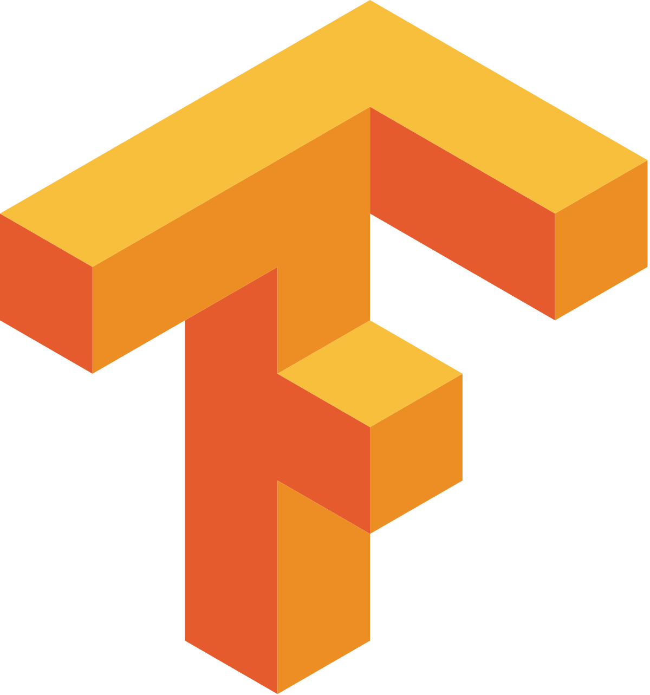

Programs and Tools

Python

Numpy

Scikit learn

OpenCV

MediaPipe

Tensorflow

Pytorch

Flask
Google Colab

Google Drive

HTML5

Sign language translation has become a prominent area of research, aiming to bridge the communication gap between individuals with hearing disabilities, who predominantly use sign language, and those who do not comprehend it. In this literature review, we focus on exploring the effectiveness of LSTM (Long Short-Term Memory) and CNN (Convolutional Neural Network) architectures to enhance translation accuracy, particularly in multi-word translation scenarios. Several studies have delved into sign language recognition and translation, leveraging the Mediapipe framework alongside LSTM architectures. For instance, in the work of
All the mentioned papers contribute valuable insights to the field of sign language recognition and translation, providing a foundation for our experimental setup and comparison be- tween LSTM and CNN architectures
In this study, we designed an experimental setup to facilitate the collection and processing of sign language datasets. The experimental setup involved the integration of various software libraries, frameworks, and hardware components to achieve our research objectives effectively. The key components of our experimental setup are as follows: Python: We utilized the Python programming language as the primary programming tool for implementing our sign language recognition and translation algorithms. Python offers a wide range of libraries and frameworks that are instrumental in machine learning and computer vision tasks. OpenCV: OpenCV (Open Source Computer Vision Library) was utilized for various computer vision tasks, including image and video processing, to preprocess and augment the sign language datasets. TensorFlow: TensorFlow, an open-source machine learning framework, played a crucial role in developing and training deep learning models for sign language recognition. We lever- aged TensorFlow’s flexibility and performance capabilities to create CNN and LSTM architectures. Mediapipe: The Mediapipe library was integrated into our experimental setup to extract key facial landmarks and hand gestures from video data captured using mobile cameras. This enabled us to incorporate important non-manual features in the recognition process. YOLOv5: YOLOv5 (You Only Look Once version 5) was utilized for real-time object detection to identify specific signs and gestures in the video streams captured by the mobile camera. Roboflow: Roboflow, an online platform for computer vision data management, was used to streamline dataset preparation and organization. It allowed us to manage and annotate the collected sign language datasets efficiently. Hardware: We employed two primary hardware components in our setup. First, we utilized a mobile camera from an iPhone to capture sign language gestures and record video datasets in real-world scenarios. Second, we leveraged Google Colab Pro Plus, a cloud-based computing platform, to access powerful GPU resources for training deep learning models. Google Drive: To facilitate data storage and sharing, we utilized Google Drive as the cloud storage solution for our sign language datasets. All collected datasets were uploaded and organized on Google Drive for easy access and sharing among team members. The experimental setup allowed us to collect real-world sign language datasets using a mobile camera and efficiently process and train deep learning models on Google Colab Pro Plus. The integration of various software tools and hardware components ensured a comprehensive and efficient workflow throughout the research process.
The primary objective of this research is to develop an effective sign language translation program that facilitates seamless communication between individuals with hearing disabilities, who primarily use sign language, and those who do not understand sign language. The program aims to address the challenges faced by people with hearing disabilities in expressing themselves and interacting with the hearing popu- lation. The research focuses on comparing two popular machine learning architectures, CNN (Convolutional Neural Network) and LSTM (Long Short-Term Memory), to determine which model is more suitable for interpreting sign language gestures. By conducting experiments using a comprehensive dataset of sign language gestures, collected through imitation and recording, we will assess the performance of the CNN and LSTM models. The study emphasizes the significance of technology, partic- ularly machine learning techniques, in bridging the communi- cation gap between sign language users and non-sign language users. Leveraging advancements in artificial intelligence and data processing, the program aims to develop a robust and accurate translation system capable of effectively interpreting various sign language expressions. To ensure the effectiveness of the translation program, the research underscores the importance of collecting a diverse dataset that encompasses a wide range of sign language ges- tures, including expressions, actions, and multi-word phrases. The dataset’s comprehensiveness is essential for training and evaluating the performance of the CNN and LSTM models under real-world translation scenarios. Beyond its technical aspects, the research also recognizes the potential societal impact of successful sign language translation systems. By fostering effective communication, the program seeks to improve inclusivity and social integration for individuals with hearing disabilities, enabling them to participate more actively in various aspects of life. The research findings will provide valuable insights into the strengths and weaknesses of the CNN and LSTM models for sign language translation. This knowledge will contribute to the advancement of sign language translation technology and guide further research in developing even more accurate and efficient translation systems. Ultimately, the research aspires to create a positive impact on the lives of individuals with hearing disabilities, empow- ering them with better means of expression and interaction. By promoting equal opportunities for communication and understanding, the program aims to create a more inclusive and accessible society for all.
To develop an effective sign language translation program, we commenced with the collection and preprocessing of the sign language gesture dataset. Our dataset includes 10 common words, such as ”Hello, Hungry, Sick, Sorry, Thank you, What, When, Where, Who, Why,” which are frequently used in ev- eryday life. Each pose uses 30 videos, with 1 video per session of the pose. Some of the gestures were chosen because they were similar to increase the difficulty of the test. The gestures for these words were captured through videography, with the author personally performing and recording each gesture using American Sign Language (ASL) at a resolution of 1980 x 720 pixels and 30 frames per second video. This comprehensive dataset provides a diverse range of ASL gestures for training and testing our translation models.
After capturing the sign language gesture videos, we pre- process the data by dividing each video into individual image Fig. 2. Word ”Why” action Fig. 3. Word ”Why” action Fig. 4. Word ”Hello” action Fig. 5. Word ”Hello” action frames. From each video, we carefully select 30 frames that are appropriate for further analysis and model training. For the CNN model’s dataset, we pick one frame out of the 30 frames captured, specifically choosing the frame that most clearly represents the intended gesture. This single frame is then utilized as the input for the CNN model. On the other hand, for the LSTM model’s dataset, we utilize all 30 frames obtained from each video. We leverage the Mediapipe framework, specifically the holistic detect function, to identify and extract the coordinates of each body point. This process results in datasets containing the time series coordinates of the detected body points for each gesture.
Sign language translation is essential for effective com- munication between individuals with hearing disabilities who primarily use sign language and those who do not understand it. This section provides an overview of existing sign language translation models, with a focus on LSTM and CNN architec- tures, which are commonly used in this field. LSTM (Long Short-Term Memory) models are well-suited for capturing temporal dependencies and recognizing dynamic movements in sign language. They excel in understanding the nuanced aspects of sign language communication, particularly in recognizing multi-word expressions due to their ability to consider the order and timing of gestures. On the other hand, CNN (Convolutional Neural Network) models have been primarily used for static image classification tasks in sign language recognition, such as hand detection and segmentation. While proficient in extracting spatial features from images, they lack the capability to capture the temporal dynamics inherent in sign language. Despite this limitation, their effectiveness in specific tasks makes them a valuable component of sign language translation systems.
For training and testing our models, we partitioned the dataset into 80% for training and 20% for testing, and im- plemented cross-validation to ensure robust evaluation. On the CNN model side, we utilized the YoloV5 frame- work and the pytorch library. Specifically, we employed the yolov5s.pt model, the smallest model with 214 layers and 7,046,599 parameters. For the LSTM model, we employed the Tensorflow library and created a sequential model with 5 layers and 231,562 parameters. Each layer was defined with specific input shape and activation settings. To train the models, we prepared the data with a batch size of 64 and conducted 150 epochs to optimize their performance.